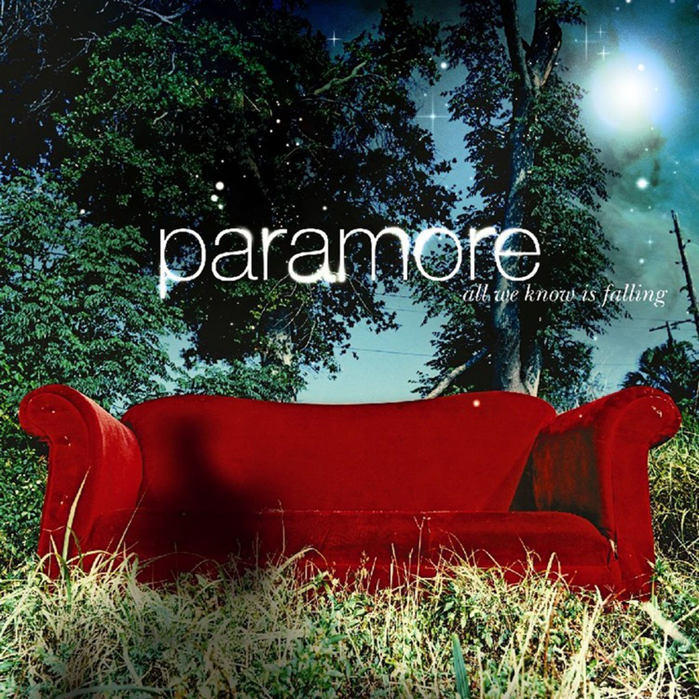
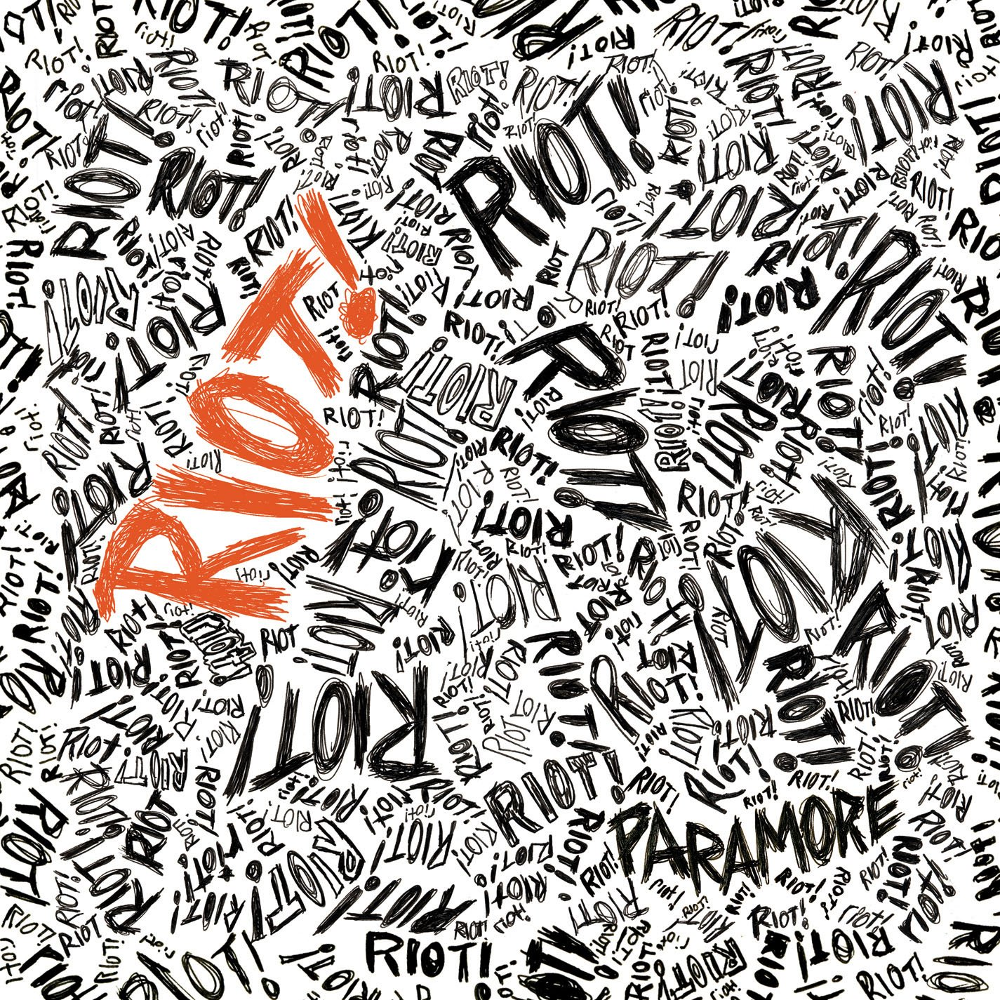
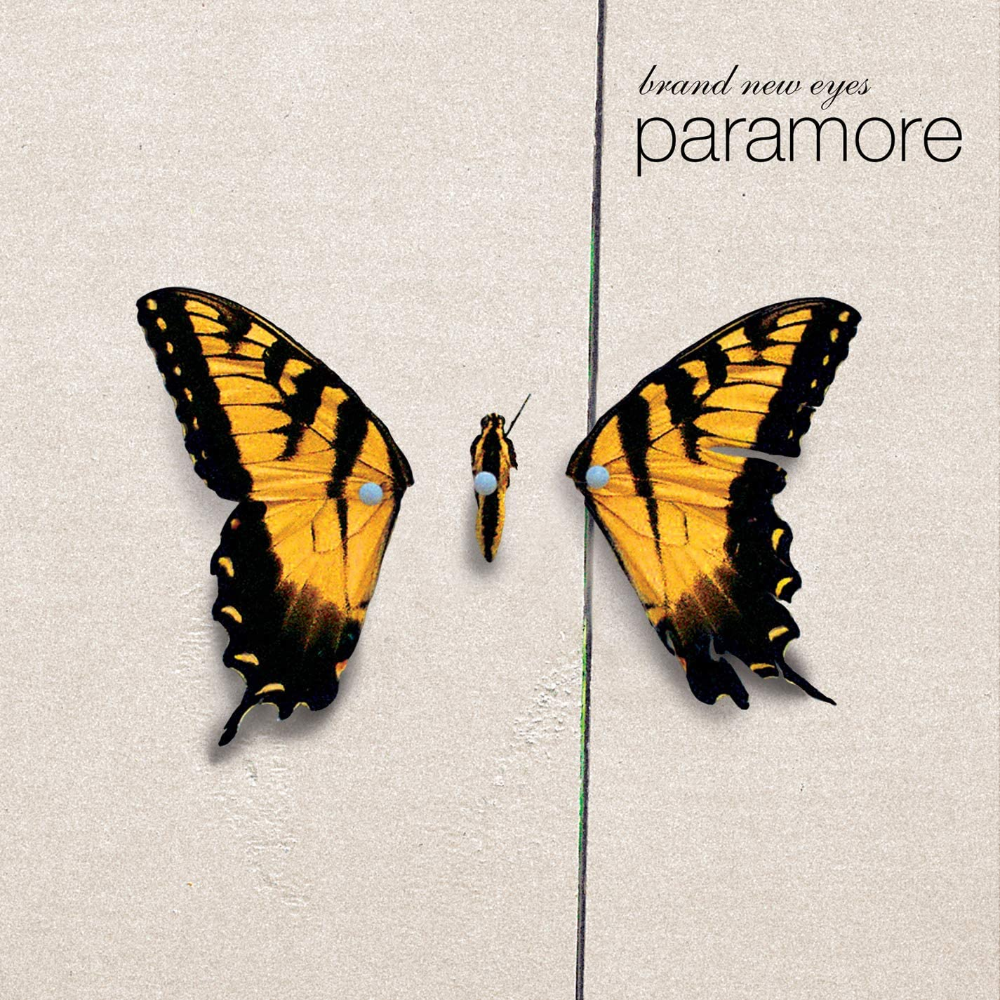
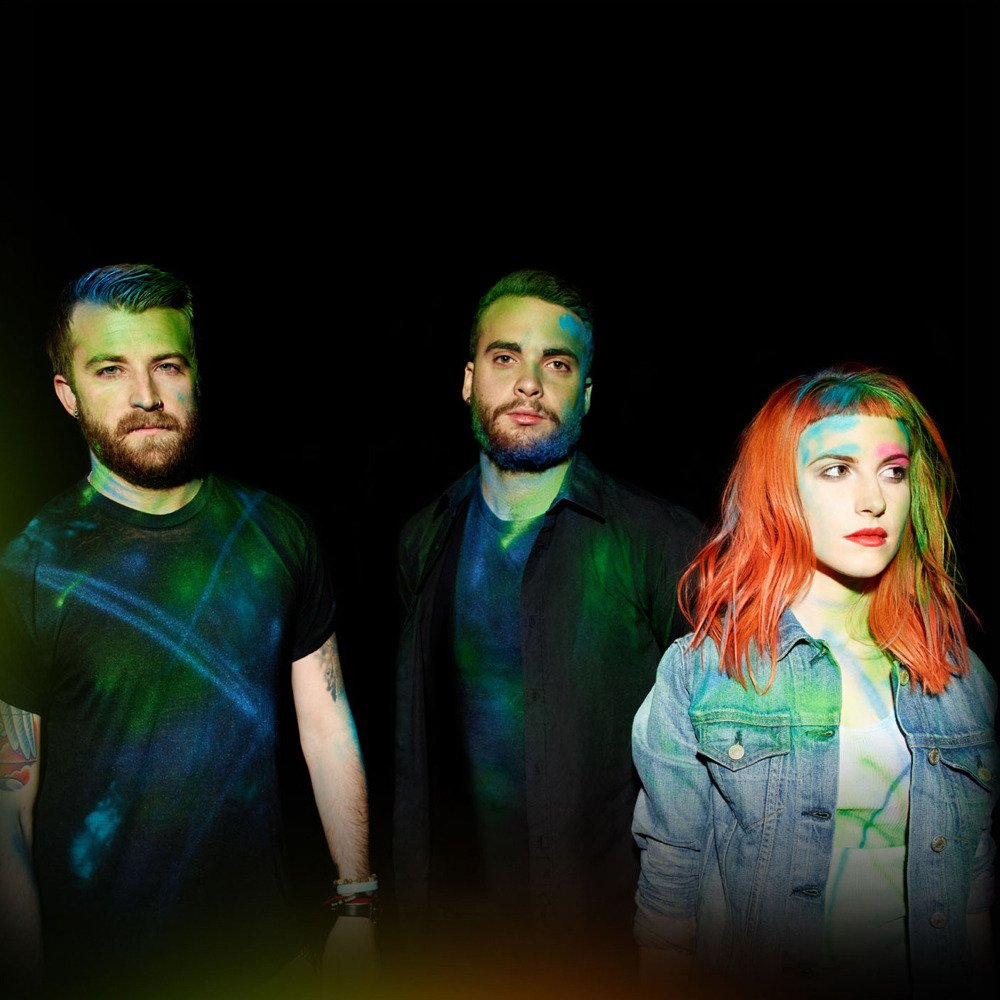
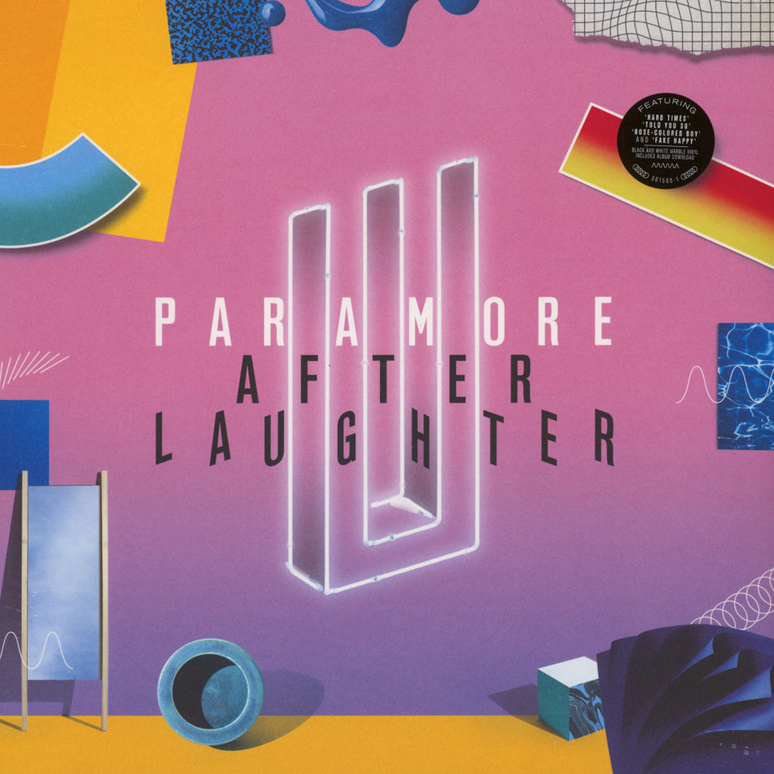

Quem são
Paramore é uma banda americana de rock formada em Franklin, Tennessee no ano de 2004. A banda já lançou cinco álbuns de estúdio: All We Know Is Falling (2005), Riot! (2007), Brand New Eyes (2009), Paramore (2013) e After Laughter (2017). O grupo permaneceu praticamente sem alterações de membros de 2004 a 2010. Os integrantes atuais são Hayley Williams, Taylor York e Zac Farro.
O primeiro álbum da banda, All We Know Is Falling, foi lançado em 26 de julho de 2005 e alcançou a segunda posição na Billboard Comprehensive Albums, além de ganhar certificação de ouro no Reino Unido por mais de 100 mil cópias vendidas. O segundo disco, Riot!, lançado em 12 de junho de 2007, foi o primeiro grande sucesso do grupo, vendendo mais de dois milhões de cópias. Riot! também ganhou certificação de platina da Billboard 200 por ultrapassar um milhão de vendas.
O terceiro álbum da banda Brand New Eyes lançado em 29 de setembro de 2009 também alcançou boas posições com todos os singles nas paradas musicais. O álbum também ganhou certificação de ouro pela Billboard 200. Em 2010, o Paramore sofreu mudanças e os integrantes e irmãos Josh e Zac que permaneceram na banda com Hayley desde 2004 deixaram a mesma por motivos pessoais. Em 2013, o quarto álbum de estúdio do grupo foi lançado e foi um sucesso comercial. Em 14 de dezembro de 2015 a banda anunciou a saída do baixista Jeremy Davis. No fevereiro de 2017, Zac Farro foi anunciado como novamente um membro oficial da banda e então um quinto disco foi lançado no mesmo ano.
História
A banda Paramore foi formada em Franklin, no Tennessee em 2004, com Hayley Williams como vocalista, Josh Farro como guitarrista, Zac Farro como baterista e Jeremy Davis como baixista. O primeiro disco do grupo, intitulado All We Know Is Falling, foi lançado em 2005 e chegou a entrar em uma lista da Billboard. O Paramore conquistou um sucesso maior com o lançamento do Riot!, o segundo álbum, lançado em 2007. O single Misery Business, um dos mais conhecidos da banda, levou o grupo para a notoriedade. Prova disso é que eles foram indicados para o Grammy no ano seguinte como Artista Revelação.
Eles ainda possuem mais três discos: Brand New Eyes, Paramore e After Laughter.
Atualmente, o grupo conta apenas com Hayley e Zac como integrantes da formação original. Em 2010, Josh e o próprio Zac anunciaram a saída da banda e Jeremy deixou o Paramore em 2015, mesmo ano em que eles venceram a categoria Best Rock Song no Grammy Awards com o single Ain't It Fun.
Hoje, o Paramore é formado por Williams, Taylor York e Zac Farro.
Discografia
All we know is falling (2005)
O álbum de estreia foi lançado em julho de 2005, o vídeo do single ‘Pressure’ foi lançado logo em seguida, e Paramore foi instantaneamente a conversa da cena pop punk/emo. Bandas que tinham ajudado a pavimentar o caminho para eles como blink-182, Jimmy Eat World, e Fall Out Boy tinham todos lançado materiais mais brutos antes de chegarem aos sons pelos quais são mais conhecidos, mas Paramore – com seus integrantes ainda na adolescência na época – fincou sua bandeira no cenário. Levou apenas alguns segundos em ‘Pressure’ para que ficasse claro que os jovens eram uma força a ser considerada. Um riff de guitarra ultra atraente dá o pontapé inicial, Zac Farro entra em cena com um de seus muitos preenchimentos de bateria herméticos, e a canção se transforma em uma euforia punk-pop. As coisas só melhoram quando Hayley introduz o mundo à sua voz, agora icônica, e a música se eleva mais uma vez quando explode em seu refrão de meio tempo, agitando o chão. O gancho de Hayley é inegável, e quando o guitarrista Josh Farro entra naquela pequena sétima curva principal, você realmente ouve como Paramore estava revolucionando o pop punk.
‘Pressure’ teria sido suficiente por si só para fazer do Paramore a nova banda da Warped Tour/Hot Topic, mas o All We Know Is Falling não parou por aí. Nasceram mais dois singles que dominaram a cena (‘Emergency’ e ‘All We Know’) e as sete canções restantes não foram nada muito distante de nenhum deles. É um daqueles álbuns sólidos de dez músicas em que a coisa toda é demais do início ao fim, sem nenhuma faixa “desnecessária” à vista. Eles mudam o suficiente para manter as coisas interessantes – desde o punk-pop dos singles até a balada das últimas três músicas, e algumas coisas legais entre elas, como ‘Brighter’ meio dançante, e a meio espaçosa ‘Here We Go Again’ – mas eles também se agarram a uma vibração principal. É um álbum onde se você gosta de uma canção, você quase definitivamente vai gostar do resto. Paramore ficou muito melhor à medida que prosseguiam, e por causa disso, a narrativa que frequentemente envolve sua estreia é que é um primeiro rascunho promissor de um som que eles aperfeiçoariam em sua sequência em 2007, com ‘Riot!’. É definitivamente um pouco mais simples que Riot! e a produção o faz soar um pouco mais datado, mas essa narrativa deixa de fora o quanto de um clássico instantâneo All We Know Is Falling foi quando saiu em 2005, e o quão bem estas canções envelheceram.
Riot! (2007)
All We Know Is Falling estabeleceu Paramore como uma das novas grandes bandas do pop-punk, mas Riot! os elevou ao escalão superior do rock alternativo em geral. É possivelmente o maior álbum de punk-pop mainstream do final dos anos 2000, e viu o Paramore se expandindo significativamente com o som de sua estreia. A produção é mais quente, com um som mais atemporal, e deu muito mais espaço para as canções do Paramore (foi produzido pelo veterano David Bendeth), e a composição da banda foi muito mais variada. Riot! ainda tem elementos emo/pop-punk suficientes para mantê-lo enraizado naquele mundo, mas se ramificou em todos os tipos de outros territórios.
Riot! é um álbum mais dinâmico do que seu predecessor, as melodias são mais fortes e únicas, e a emoção da letra é mais palpável. As canções do álbum de estreia envelheceram bem, mas as de Riot! não parecem ter envelhecido de forma alguma. Um punhado delas permaneceram poderosas ao vivo durante toda a mais recente turnê da banda, e soaram tão frescas nesses shows quanto as músicas mais novas que foram tocadas ao lado. Em nenhum outro lugar isso é mais verdadeiro do que em ‘That’s What You Get’, a melhor música do álbum e uma das melhores músicas do Paramore em geral. É o refrão com mais cara de “hino” que a banda já escreveu. Sua total atratividade é acompanhada por ritmos sutilmente intrincados – é uma das muitas músicas em que Zac Farro emerge como a arma não tão secreta da banda.
‘That’s What You Get’ é uma grande e brilhante canção de rock, mas Riot! também tem sucesso por seus lados mais escuros e sombrios que só foram insinuados no álbum anterior. A estreia não teve nada como o emaranhado plácido de ‘When It Rains’, a melancólica balada poderosa ‘We Are Broken’, ou o rock mais duro e pesado de músicas como ‘Let the Flames Begin’, ‘Fences’ e ‘Born For This’ (que incorpora vocais gritados e uma interpolação indeferida). Depois há “Misery Business”, que a banda se aposentou oficialmente devido a uma de suas letras controversas, mas que — pelo menos musicalmente — também marcou uma progressão para Paramore, os levou para um território musical mais sombrio e complexo, e não surpreendentemente se tornou uma de suas maiores canções. ‘Misery Business’ e ‘That’s What You Get’ sempre foram os dois grandes favoritos dos fãs do álbum, mas seu hit um pouco mais subestimado e a canção mais interessante é ‘crushcrushcrush’. Paramore pode ter interpolado ‘Born For This’, mas eles definiram a forma como o rock de arena deveria ser com ‘crushcrushcrush’. É a saída mais drástica de um álbum, do mais direto como All We Know Is Falling, para uma estrutura musical experimental, mudanças dinâmicas radicais, e um dos coros mais viciantes de Hayley envolto em uma de suas mais intensas apresentações.
Brand New Eyes (2009)
O mundo do emo/pop punk/etc não era um lugar muito animado em 2009. Muitas das principais bandas haviam se separado, estavam perdendo vapor ou estavam passando por crises de identidade. O mundo da ‘Warped Tour’ estava abraçando o “crunkcore”, o rock alternativo mainstream estava voltando sua atenção para bandas de rock indie mais aclamadas pela crítica, e o eventualmente aclamado ” renascimento emo” estava ainda em um estágio muito cedo, muito underground. Mas mesmo com todas as probabilidades trabalhando contra, Paramore prevaleceu e lançou mais um grande disco de rock alternativo com emoção e referências emo/punk.
A banda havia insinuado um lado mais pesado desde o primeiro dia, mas eles vieram rugindo na faixa de abertura do Brand New Eyes, ‘Careful’, com possivelmente o riff mais foda de Josh Farro da discografia inteira, e um ataque técnico, mas acrobático, de seu irmão Zac para combinar. Zac continua arrebentando na bateria, assim que Hayley chega com alguns dos gritos mais inflamados que ela já havia colocado em uma gravação. É Paramore em seu lado mais furioso, e quando o refrão chega, eles provam que não perderam seu jeito para os bons ganchos pop. Eles mantêm o nível no ataque de hard rock/emo da segunda música ‘Ignorance’, mas Brand New Eyes rapidamente não se resume a um único estilo.
‘The Only Exception’ é a melhor balada leve que a banda escreveu (talvez até hoje), ‘All I Wanted’ dominou o tipo de balada de poder pós-hardcore-informada que Paramore experimentou nos cortes mais profundos de sua estreia, e ‘Misguided Ghosts’ é de longe a balada mais sóbria e sombria que eles já escreveram. Brand New Eyes também navega muito pelo meio, e funde os extremos do som do Paramore ainda mais suavemente do que Riot!. Guitarras acústicas soltas, arpejos reluzentes e ritmos de meio-tempo balançando encontram seu caminho para canções que, de outra forma, seriam difíceis de serem tocadas, talvez não mais efetivamente do que na favorita de muitos ‘Brick by Boring Brick’, uma canção tão única do Paramore que é difícil imaginar qualquer outra banda escrevendo-a.
Os pontos altos de Brand New Eyes não são tão altos quanto Riot!, destaques como ‘That’s What You Get’ e ‘crushcrushcrush’, mas o álbum ainda era, de modo geral, uma progressão. Apesar de ter sido gravado em meio a algumas questões internas, a química, precisão e confiança da banda soam mais inegáveis neste álbum do que jamais haviam sido antes. A produção é ainda mais quente e mais espaçosa do que em Riot! (esta foi feita com o produtor Rob Cavallo), as músicas fluem perfeitamente umas para as outras, e apesar de ser um pouco mais longo do que Riot!, Brand New Eyes voa de uma forma que parece ainda mais curta. Também encontra Hayley trabalhando com mais profundidade e honestidade em suas letras, algo que alcançaria picos ainda mais altos em After Laughter e seu álbum solo.
‘The Only Exception’ pode soar como sua canção de amor média na superfície, mas revelações como “Eu prometi nunca cantar de amor se ele não existisse” e “Até agora eu tinha jurado a mim mesma que me contentava com a solidão porque nada disso valia o risco” provam que ela é muito mais. “Looking Up” abordou as questões internas da banda e os rumores de uma ruptura, e conseguiu fazer sucesso na linha entre escrever sobre questões da banda e escrever uma grande canção com longevidade no processo. “Não acredito que quase a penduramos; estamos apenas começando”, canta Hayley. Isso provaria ser muitíssimo real.
Paramore (2013)
Os rumores de ruptura da banda nunca se materializaram, mas a banda acabou se separando dos irmãos Farro no ano seguinte à saída de Brand New Eyes, e eles demoraram alguns anos para se re-focalizar antes de começar a trabalhar em seu álbum auto-intitulado, que seguiu a maior pausa do Paramore entre os álbuns até então. Hayley disse que era auto-titulado porque “não está apenas reintroduzindo a banda ao mundo, mas até a nós mesmos”, e que “ao final dele, parecia que éramos uma nova banda.” E eles eram uma espécie de banda nova. Com Josh Farro fora da banda, Taylor York havia se tornado oficialmente o parceiro principal da Hayley (e co-produtor), e este álbum foi também o início da parceria criativa da banda com o produtor/multi-instrumentista Justin Meldal-Johnsen e o engenheiro Carlos de la GarzaWut. Meldal-Johnsen tinha sido músico de estúdio para Beck e músico de turnê para Nine Inch Nails antes de se solidificar como produtor em demanda, com seu trabalho no álbum duplo Hurry Up We’re Dreaming 2011, clássico instantâneo da M83. Ele e de la Garza ajudaram desde então não apenas Paramore, mas também Tegan & Sara e Jimmy Eat World a se reinventarem e a darem nova vida às suas carreiras. Em todos esses três casos, a banda em questão era uma banda emo/rock procurando transcender as barreiras desse gênero, e em todos os três casos, foi um sucesso.
Sem baterista na banda, a bateria era tocada por Ilan Rubin (que havia tocado ao lado de Meldal-Johnsen em Nine Inch Nails e que também se juntou recentemente à banda de Tom DeLonge Angels & Airwaves), e enquanto as baquetas de Zac são difíceis de serem substituídas, a bateria de Ilan Rubin também não é ruim. Também a bordo estava Ken Andrews (frontman do Failure, que Paramore havia coberto em 2006) para fornecer a mixagem, teclados e backing vocals. Assim, os irmãos Farro podem ter ido embora, mas Hayley, Taylor e Jeremy Davis tinham reunido uma grande equipe para este álbum, e eles foram muito capazes de superar os obstáculos que enfrentaram e sair com mais um grande álbum. Paramore não foi a reinvenção total que seu sucessor After Laughter seria, mas ajudou a definir o tom do salto que a banda daria naquele álbum. É uma espécie de disco de transição na discografia do Paramore, com traços de seu som clássico e dicas de para onde eles iriam em seguida. Com mais de uma hora de duração, é de longe o álbum mais longo da banda, e é o único em que – ao invés de se concentrar em um som coeso – eles decidiram jogar “merda na parede” e ver o que grudava. É um álbum mais livre, mais solto, e ainda mais do que em Brand New Eyes, a letra de Hayley parece mais profunda, mais pessoal, e mais honesta. Há dicas da antiga Paramore em ‘Now’, ‘Part II’, ‘Be Alone’, e especialmente ‘Still Into You’, que é a melhor canção no estilo 2000 dos anos 2010, mas mesmo essas canções encontram a banda incorporando sintetizadores e batidas dançantes que prefiguram o novo som mais ondulado do After Laughter.
Paramore foi ainda mais fundo nessa direção na abertura ‘Fast In My Car’ e no dance-rock de ‘Grow Up’, e depois há o rock de arena quase gospel ‘Ain’t It Fun’, o maior single do álbum e o mais próximo que Paramore já chegou de soar como pop mainstream real. Tirado do contexto, um cínico pode tê-lo visto como se a banda estivesse “se vendendo”, mas como a faixa seis do Paramore, ele acrescenta à variedade do álbum. E, em retrospectiva, ajudou a dar o tom para grande parte do After Laughter e até mesmo partes do álbum solo de Hayley, Petals For Armor. O álbum atua como uma ponte entre a era inicial da banda e sua era atual, mas faz muito mais do que isso também. Ele brinca com ukulele indie pop nas três músicas ‘Interlude’, canaliza baladas retro em ‘(One of Those) Crazy Girls’, tira o chapéu para Blondie em ‘Daydreaming’, e oferece rock alternativo em ‘Last Hope’. Depois, há ‘Anklebiters’, que injeta um pop-chiclete com a velocidade e os vocais do clássico hardcore punk de uma maneira que só Paramore poderia fazer, e ‘Future’, um épico de quase oito minutos que funde shoegaze e sludge metal. É um álbum onde realmente vale tudo, e é o momento em que a banda provou que sempre soará como si mesma, independente do gênero que toquem.
After Laughter (2017)
Paramore teve outra mudança após o álbum auto-intitulado com a saída do baixista de longa data Jeremy Davis, mas eles também receberam de volta um antigo membro: o baterista Zac Farro. Paramore sobreviveu à partida dos Farros, mas como mencionado anteriormente, Zac sempre foi sua arma não tão secreta, e seu retorno para After Laughter só confirmou mais uma vez isso. Com Taylor mais estabelecido em seu papel como o principal colaborador de Hayley, Zac de volta atrás do kit (e agora também fornecendo co-escrita, tons e backing vocals), e um novo foco em um pop new-wave, Paramore fez seu melhor álbum até agora.
Se você tivesse me dito por volta da época em que a Riot! saiu que Paramore ainda estava a pelo menos uma década de atingir seu potencial máximo, não sei se eu teria acreditado em você, mas o After Laughter provou que a Paramore estava de fato apenas começando, assim como a Hayley cantou em 2009. Com After Laughter, Paramore transcendeu completamente a cena do Warped Tour, e qualquer outra cena. O álbum canalizou grandes artistas dos anos 70/80 como Blondie e Fleetwood Mac tanto quanto canalizou indie e alt-pop contemporâneos, mas mais do que qualquer outra coisa, soou apenas como Paramore. Seja no funk-punk de ‘Rose-Colored Boy’ e ‘Told You So’, o reggae-tingido em ‘Caught in the Middle’, o chiclete explosivo de ‘Grudges’, ou o pop-brilhante de ‘Forgiveness’, o álbum soa perfeitamente como Paramore. Não que Hayley já não fosse uma vocalista única, mas o After Laughter confirmou o quão distinta ela ainda é, sem qualquer sinal de se apoiar no anterior estilo emo/punk, no qual se consagrou.